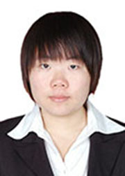

坚持是一种品质
大家好，我叫刘晓东，是一名中共党员，教育学部2010级心理学专业本科生。现已保送华南师范大学心理学院基础心理学方向攻读硕士学位。
我出生在一个清贫的农村家庭，父母靠务农维持生计，小学六年的学费都是母亲带着我和姐姐挨家挨户借来的。从小我便立志更要发愤图强，通过自己的努力改变我的家庭。
我出生在一个清贫的农村家庭，父母靠务农维持生计，小学六年的学费都是母亲带着我和姐姐挨家挨户借来的。从小我便立志更要发愤图强，通过自己的努力改变我的家庭。
从大一到大三，我每天都是六点起床，晚上十点多才回到寝室，在我的生活里没有周六周日，没有中秋和十一，有的只是未完成的计划和还没有实现的目标。我的成绩一直名列前茅，尤其是在大三学年中，我以5.14的学分绩点成为年级第一，优秀率100%，前三年专业科目优秀率达到95%，总排名专业第一。而这得益于我每月至少两本专业书籍的阅读量，得益于我科学的学习方法，得益于我坚韧的意志。
除了学习，我对科研一直抱有浓厚的兴趣。我参加过多项科研项目，包括国家级、校级和院级，这些项目现均已结题。课堂外，科研成了我生活的主要部分，从开始阅读文献，实地研究，到后来讨论总结，论文发表，我的每一步都走得扎扎实实。别人的周末可能在逛街、看电影，而我每周六都会准时出现在科研导师师门讨论的会场。此外，我把眼光放长、放远，联系到清华大学隋洁教授，参与师门讨论10余次，与老师面对面交流；2013年7月，又参加了北京师范大学认知神经科学与学习研究所暑期学校。正是有了这样的经历，我对心理学研究有了全新的整体上的认识，对自己的未来发展有了更加科学合理的规划。而这些经历的获得，正是自己善于发现和把握机会，更重要的是自己一直在科研道路上乐此不疲。现已保送华南师大的我，终将会越走越远。
看到过很多理想与成才报告团成员的经历，让我懂得服务他人才能更好的实现自己，为此，我积极主动投身到学生工作当中去，曾担任教育学部团委科研部干事、学校科研中心干事、学部团委科研部副部长、2010级心理班学习委员、教育学部团委副书记，现在是年级学生党支部宣传委员。从大一到大三，我参与、组织、举办了学部团委各项活动。且在我担任学部团委副书记期间，学部团委被评为“五四红旗团委”。如今身为党员的我，更是抱有一颗服务他人的心，作为年级党支部宣传委员，积极配合老师，做好年级各项工作。
我深知大学是探索知识，充实自己的黄金阶段，更是发愤图强，追求人生目标的过程，唯有用奋斗的笔，才能书写最极致的青春 。
除了学习，我对科研一直抱有浓厚的兴趣。我参加过多项科研项目，包括国家级、校级和院级，这些项目现均已结题。课堂外，科研成了我生活的主要部分，从开始阅读文献，实地研究，到后来讨论总结，论文发表，我的每一步都走得扎扎实实。别人的周末可能在逛街、看电影，而我每周六都会准时出现在科研导师师门讨论的会场。此外，我把眼光放长、放远，联系到清华大学隋洁教授，参与师门讨论10余次，与老师面对面交流；2013年7月，又参加了北京师范大学认知神经科学与学习研究所暑期学校。正是有了这样的经历，我对心理学研究有了全新的整体上的认识，对自己的未来发展有了更加科学合理的规划。而这些经历的获得，正是自己善于发现和把握机会，更重要的是自己一直在科研道路上乐此不疲。现已保送华南师大的我，终将会越走越远。
看到过很多理想与成才报告团成员的经历，让我懂得服务他人才能更好的实现自己，为此，我积极主动投身到学生工作当中去，曾担任教育学部团委科研部干事、学校科研中心干事、学部团委科研部副部长、2010级心理班学习委员、教育学部团委副书记，现在是年级学生党支部宣传委员。从大一到大三，我参与、组织、举办了学部团委各项活动。且在我担任学部团委副书记期间，学部团委被评为“五四红旗团委”。如今身为党员的我，更是抱有一颗服务他人的心，作为年级党支部宣传委员，积极配合老师，做好年级各项工作。
我深知大学是探索知识，充实自己的黄金阶段，更是发愤图强，追求人生目标的过程，唯有用奋斗的笔，才能书写最极致的青春 。